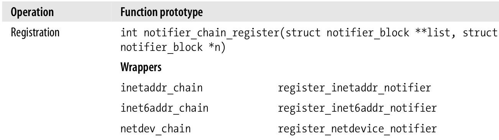
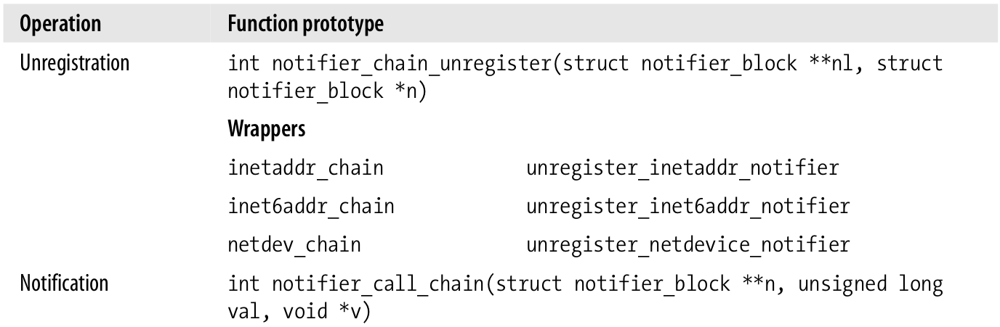

通知链
Table of Contents
内核的许多子系统都是相互独立的，所以发生在其中一个子系统的事情也许是其它子系统关心的．为了完成这种通知，Linux使用一种叫做通知链的机制．
在本文中，将会介绍以下内容：
- 通知链如何声明以及网络代码定义了哪些通知链．
- 某个内核子系统怎样注册到一个通知链．
- 某个内核子系统怎样发送通知到通知链．
要注意的是通知链仅用于内核子系统间，至于内核和用户空间的机制，参考本系列的其它文章．
1 为什么要有通知链
如下图，假设有一个Linux路由器具有4个接口，这个图展示了这个路由器和五个网络的关系，以及一个简化版的路由表．

Figure 1: 一个Linux路由器的例子
在这个图中，通过接口eth0网络A直接连接到RT路由器，而网络F并未直接连接到RT．但是RT的eth3接口直接连接到另一个路由器，而这个路由器有一个接口具有地址IP1，这个路由器知道怎么到达网络F，其它情况是类似的．简而言之，某些网络可以直接连接而另外一些网络则需要额外的一个或多个路由器才能到达．
现在假设接口eth3断掉了，因为硬件错误或者管理员的手动配置命令．这样网络D，E以及F就不通过RT达到了，那么这个信息就需要从路由表中移除，谁来负责告知路由子系统关于这个接口的故障呢？就是通知链．
而下面的图显示了一个更加复杂的情况，在这里路由子系统要和动态路由协议交互．

在上图中，从RT出发，网络F可以经由网络A或E到达，在最初的时候，选择了通过网络E，假设现在网络E不可达了，那么路由表必须更新，到达网络F现在经由网络A．这样的信息也需要通知到管理路由表的路由子系统，也就是通知链的必要性．
2 概要
通知链是一个函数列表，当给定的事件发生时，就会执行．每个函数都让其它子系统知道有事件发生了．
因此，对于每个通知链，都有一个被动方，和一个主动方，也就是所谓的发布订阅模型：
- 被通知者就是子系统，在事件发生时需要被通知，并且提供一个回调函数来调用．
- 通知者就是可以感知到事件并调用提供的回调函数．
要执行什么函数是由被通知的系统决定的，不是由通知链的所有者决定的，通知链的所有者仅仅是定义一个列表．
使用通知链可以使源代码更加容易编写和维护．这要求每个子系统的维护者知晓以下两点：
- 他所关心的来自其它子系统的事件种类．
- 他自己这个子系统的事件需要明白，因为其它子系统可能会感兴趣．
通知链元素的类型是notifier_block，它的定义如下：
struct notifier_block { notifier_fn_t notifier_call; struct notifier_block __rcu *next; int priority; };
notifier_call就是要执行的函数，而next用来链接下一个元素，priority代表函数的权限．具有较高权限的函数先执行，不过在实践中，priority值都是默认的0，这时执行顺序就取决于注册顺序．常见的notifier_block实例命名为xxx_chain，xxx_notifier_chain以及xxx_notifier_list．
当内核组件关心某个给定通知链的事件时，可以通过notifier_chain_register来注册．当然内核也提供一组包装函数，如下图：

Figure 3: 注册事件到通知链

Figure 4: 注册事件到通知链
如图，比如可以通过register_inetaddr_notifier来注册到inetaddr_chain通知链，其它inet6addr_chain和netdev_chain通知链类似．
对于每个通知链，notifier_block的实例被插入到列表中，这些实例由权限排序．权限相同的话就是依据插入顺序了，先到的插入到尾部．
而通知的生成由函数notifier_call_chain来做到，该函数仅是根据权限依次调用注册好的函数．需要注意的是，回调函数的执行是在调用notifier_call_chain函数的进程上下文．
被notifier_call_chain调用的回调函数可以返回NOTIFY_XXX值，比如NOTIFY_OK代表通知被正确的处理．
需要注意的是，对于同一个通知链，其notifier_call_chain函数可能同时的在不同CPU上被调用．处理互斥与序列化访问是回调函数的责任．
内核定义了至少10个不同的通知链，在本系列文章中主要包括网络方面的事件：
inetaddr_chain：当在接口上的IPv4地址插入，删除或改变时就发送通知．
netdev_chain：当网卡设备注册时发送通知．
当然网络代码也可以注册到由其它内核系统生成通知的通知链上，比如某些NIC设备驱动就会注册到reboot_notifier_list通知链上，这样就可以获得系统重启的通知．